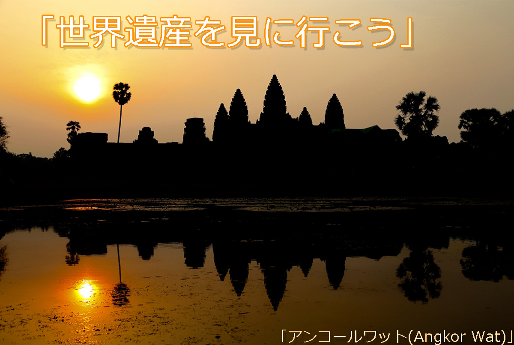
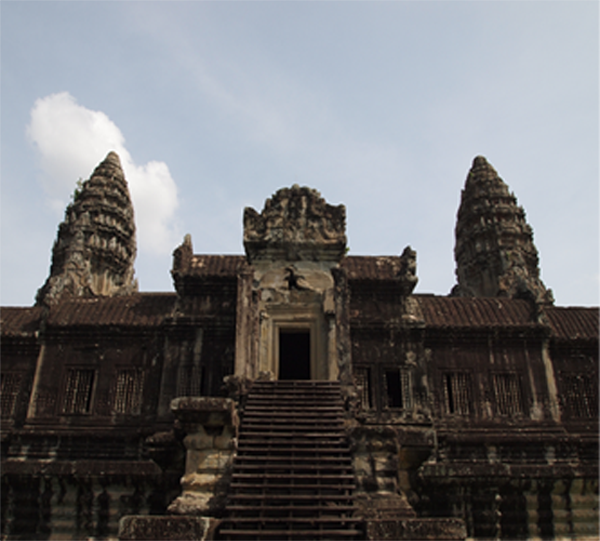
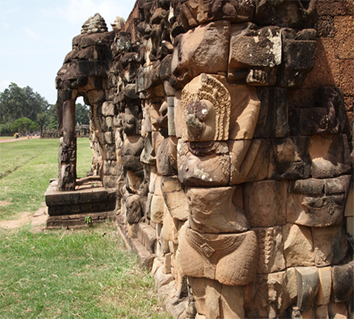
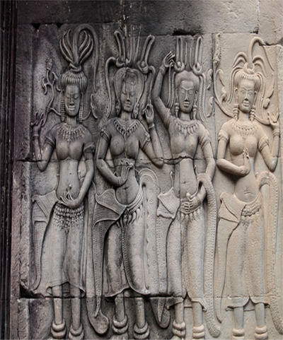
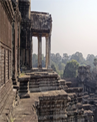
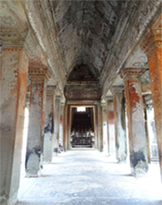
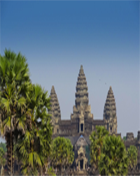
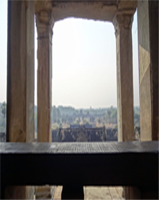
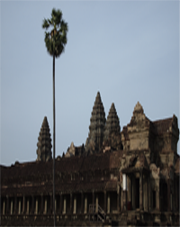
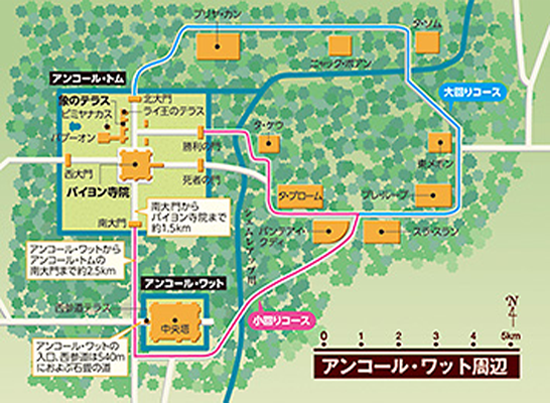

カンボジア北西部に位置するユネスコの世界遺産（文化遺産）であるアンコール遺跡の一つであり、
その遺跡群を代表するヒンドゥー教寺院建築。
サンスクリット語でアンコールは王都、クメール語でワットは寺院を意味します。
大伽藍と美しい彫刻を特徴としクメール建築の傑作とされ、カンボジア国旗の中央にも同国の象徴として描かれています。

サンスクリット語でアンコールは王都、クメール語でワットは寺院を意味します。
大伽藍と美しい彫刻を特徴としクメール建築の傑作とされ、カンボジア国旗の中央にも同国の象徴として描かれています。


アンコールワットは12世紀前半、アンコール王朝のスーリヤヴァルマン2世によって
ヒンドゥー教寺院として建立されました。東西1500m、南北1300mに渡るこの広大な寺院は当時、
3万人もの労働者を動員し約30年の歳月をかけて造られたと言われています。
1431年頃に都がプノンペンに遷ると、一時アンコールは忘れ去られた存在となります。
再発見後は、未完成であった第一回廊北面とその付近に彫刻が施され、のちに寺院は仏教寺院へと改修されました。
世界中から耳目を集めるようになったのは1860年。
この寺院を訪れたフランス人のアンリ・ムーオがジャングルにひっそり佇んでいたこの建築の
芸術性の高さを世界に発表したのです。
アンコールワットの見所はなんといっても、回廊に施された緻密なレリーフ。
ヒンドゥー教の叙事詩が表現されているその彫刻は躍動感に溢れ、ひとつひとつに表情や
動きがあり、これが全て人の手による創造だとは信じ難いほどです。
この地域一帯は1970年代からはじまった内戦でゲリラ戦が繰り広げられ、多くの地雷が
埋められました。また、寺院内の奉納仏もその多くが首を撥ねられてしまいました。
美しい建築の中に、今も歴史の生々しい傷跡を見ることができます。
| 国名 | カンボジア王国 |
|---|---|
| 面積 | 18.1万平方km（日本の約半分） |
| 人口 | 約1,300万人 |
| 首都 | プノンペン |
| 民族 | クメール人 |
| 言語 | 公用語としてクメール語ですが、ホテルやレストランなどは英語も一部可 |
| 宗教 | 仏教 |
| 通貨 | 通貨単位 リエル（Riel）、1US＄約4000リエル、 100リエル約2.9円 |
| 気候 | 大きく乾期（涼季11月上旬～1月下旬）（暑季2月上旬～5月中旬）と雨期（5月下旬から10月の下旬）の2つの季節。 |

